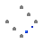

Table of Contents
- User's Guide
- Blocks
- Conditions
- Assemblies
- Regions
- Subregions
- Connectors
- Characteristics
- Units
- Quantities
- BaseClasses
Download
- Latest version (**Empty; please check back soon or contact kdavies4 at gmail.com.)

| Name | Description |
|---|---|
| EmptyPhase | Model for a phase with no species or reactions |

The area fill factor (k) is a vector which inversely scales all the transport coefficients (β, ζ, η, and θ) of all of the species within the phase. It can be used to introduce minor head loss or the effects of porosity or tortousity. These effects may be anisotropic.
Porosity is often quoted in material data sheets (e.g., [Toray2010]) as volumetric porosity. Using the Bruggeman correction factor [Weber2004, p. 4696], the area fill factor for the solid should be set to (1 - ε)3/2 along each axis, where ε is the volumetric porosity (or volumetric fill factor of the gas).1
1. Note that the Bruggeman correction contradicts what one would expect based on geometry—that the area fill factor would be the volumetric fill factor (1 - ε) raised to the two-thirds power (not three halfs).
| Type | Name | Default | Description |
|---|---|---|---|
| Integer | n_spec | Number of species | |
| Geometry | |||
| Integer | n_faces | Number of pairs of faces (nfaces) | |
| NumberAbsolute | k[Axis] | {1,1,1} | Area fill factor (k) [1] |
| Assumptions | |||
| Boolean | reduceVel | false | Same velocity for all species |
| Boolean | reduceTemp | false | Same temperature for all species |
| Type | Name | Description |
|---|---|---|
| InertDalton | inertDalton | |
| FaceBus | xPositive | Positive face along the x axis |
| FaceBus | xNegative | Negative face along the x axis |
| FaceBus | yPositive | Positive face along the y axis |
| FaceBus | yNegative | Negative face along the y axis |
| FaceBus | zPositive | Positive face along the z axis |
| FaceBus | zNegative | Negative face along the z axis |
model EmptyPhase "Model for a phase with no species or reactions" import FCSys.BaseClasses.Utilities.index; // extends FCSys.BaseClasses.Icons.Names.Middle; parameter Integer n_spec(start=0) "Number of species"; // Geometry parameter Integer n_faces(min=1, max=3) "Number of pairs of faces (nfaces)"; // This can't be an outer parameter in Dymola 7.4. parameter Q.NumberAbsolute k[Axis]( each min=Modelica.Constants.small, each final nominal=1) = {1,1,1} if n_spec > 0 "Area fill factor (k)"; // Assumptions parameter Boolean reduceVel=false "Same velocity for all species"; parameter Boolean reduceTemp=false "Same temperature for all species"; Connectors.InertDalton inertDalton(final n_trans=n_trans); Connectors.FaceBus xPositive if inclFaces[Axis.x] and n_spec > 0 "Positive face along the x axis"; Connectors.FaceBus xNegative if inclFaces[Axis.x] and n_spec > 0 "Negative face along the x axis"; Connectors.FaceBus yPositive if inclFaces[Axis.y] and n_spec > 0 "Positive face along the y axis"; Connectors.FaceBus yNegative if inclFaces[Axis.y] and n_spec > 0 "Negative face along the y axis"; Connectors.FaceBus zPositive if inclFaces[Axis.z] and n_spec > 0 "Positive face along the z axis"; Connectors.FaceBus zNegative if inclFaces[Axis.z] and n_spec > 0 "Negative face along the z axis"; outer parameter Q.Length L[Axis] if n_spec > 0 "Length"; outer parameter Q.Area A[Axis] if n_spec > 0 "Cross-sectional area"; // Note: These must be public in Dymola 7.4, so HideResult is used. protected final inner parameter Q.Length Lprime[Axis]=k .* A ./ L if n_spec > 0 "Effective cross-sectional area per length"; outer parameter Integer n_trans "Number of components of translational momentum"; outer parameter Integer cartTrans[:] "Cartesian-axis indices of the components of translational momentum"; outer parameter Integer facesCart[:] "Face-pair indices of the Cartesian axes"; outer parameter Boolean inclTrans[Axis] "true, if each component of translational momentum is included"; outer parameter Boolean inclFaces[Axis] "true, if each pairs of faces is included"; outer Conditions.Environment environment "Environmental conditions"; // This component is conditional to prevent a mathematical singularity // when two or more empty phases (without any species included) are // connected. Connectors.InertInternal common( final n_trans=n_trans, final inclTranslational=reduceVel, final inclThermal=reduceTemp, translational(phi(each stateSelect=StateSelect.prefer)), thermal(T(stateSelect=StateSelect.prefer))) if n_spec > 0 and (reduceVel or reduceTemp) "Connector to directly couple velocities or temperatures within the phase"; equation if n_spec == 0 then inertDalton.V = 0; inertDalton.mPhidot = zeros(n_trans); inertDalton.Qdot = 0; end if; end EmptyPhase;